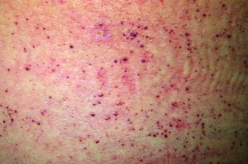
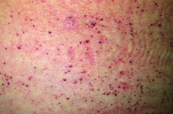

Doença de Fabry
A doença de Fabry, também chamada de doença de Anderson-Fabry, é uma patologia
hereditária rara, transmitida de modo recessivo pelo cromossoma X, o cromossoma sexual feminino.
Sintomas
Os sintomas comuns incluem episódios de dor intensa e sensações de queimação e
formigamento nas mãos e pés (dores neuropáticas), que podem ser desencadeados por
exercícios, febre, fadiga e estresse. Além disso, com o avanço da idade, aglomerados
de pequenas manchas escuras em vários locais da pele aumentam em tamanho
e quantidade (angioqueratomas)
Diagnóstico
Por ser uma doença rara e pouco conhecida, inclusive entre os médicos, muitas vezes
os pacientes precisam esperar anos entre os primeiros sintomas e o diagnóstico
definitivo. O diagnóstico pode ser confirmado através da dosagem da enzima alfa-
galactosidase A. As mulheres portadoras do gene da doença podem ser assintomáticas e ter níveis de alfa-gal A normais.
Tratamento
A doença de Fabry não tem cura. Porém, já existe uma forma sintética da enzima alfa-gal
A para administração. O tratamento é para toda a vida.